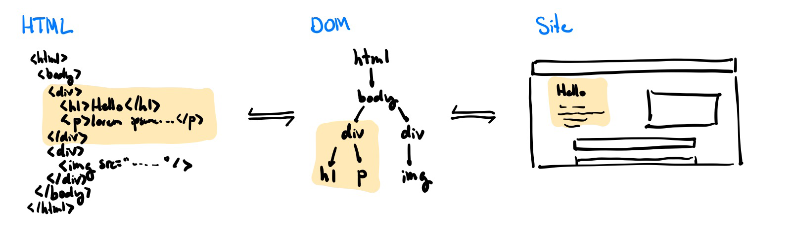
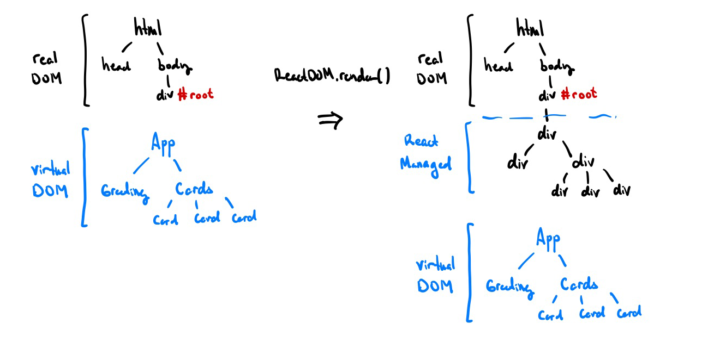
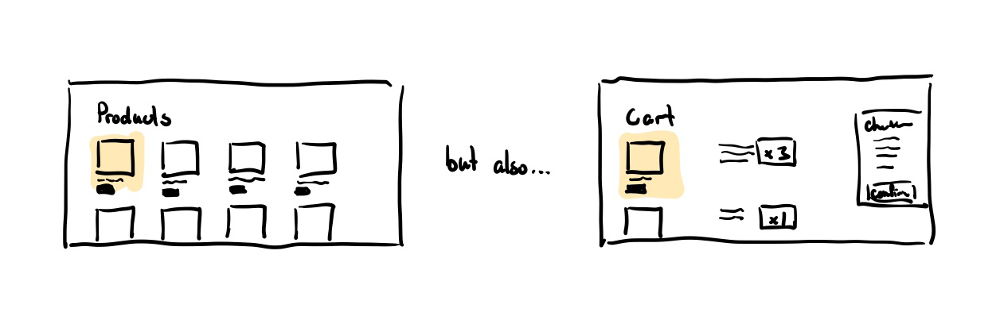
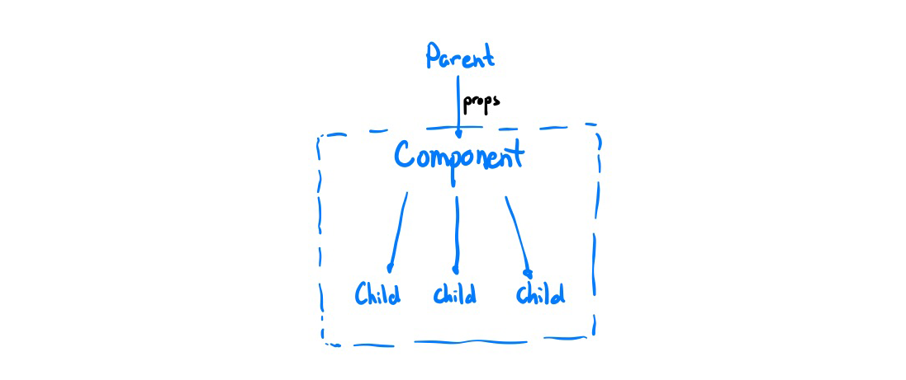
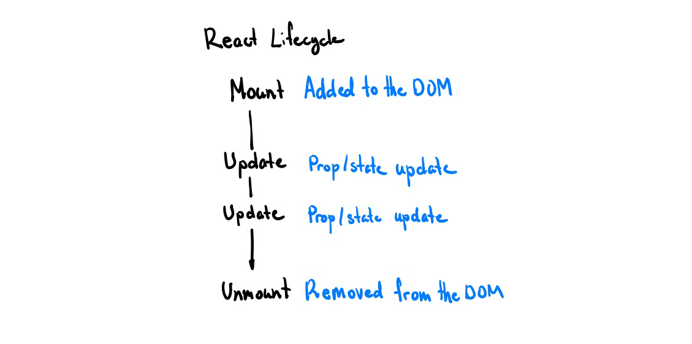
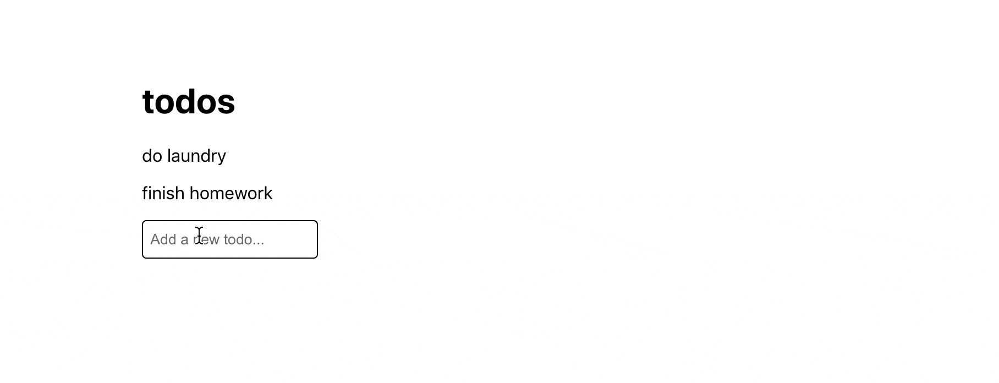

React is, as the website says, “a JavaScript library for building user interfaces.” What this means exactly, is often confusing to people.
Many articles claim to teach you “React in 10 minutes” but rarely go beyond a few code examples. The problem is that this leaves you with an inkling of what React looks like and maybe how to write a bit of it, but no clue why it works and how to think about fixing React bugs.
This isn’t some random tutorial which throws you a bunch of example code that you go on to copy-and-paste and then leaves you hanging wondering what it does. The goal of the workshop is to give attendees a good foundation of the concepts within React, why people choose to use React, and how it works behind the hood. Hopefully, this gives you a good enough foundation to hit the ground running and avoid entire classes of bugs when starting out in React!
This post assumes that you know basic HTML, CSS, and JavaScript.
What is React?
The TLDR; is that it’s a bunch of code you can add to your project that makes building websites and interfaces that react to changes when you do things (e.g. press buttons) really easy.
React has two distinguishing features that set it apart:
- React is declarative meaning you tell React exactly what you want the page to look like and it’ll figure out how to do that.
- React is component based meaning that you can create pieces of the UI that you can reuse across different parts of your application.
How a website works
Most likely, you’ve written some code for a website in plain old HTML before. This, as you know, defines the structure for what is inside a webpage. If the webpage is a house, the HTML is the blueprint that tells you what the house should generally look like and what is inside.
Yet, to turn that bunch of HTML into something displayable in your web browser, it needs to parse it into a more intermediate format it can more easily work with: the Document Object Model (DOM).
The nested structure of the HTML lends itself very well to a tree-like structure which the browser can then efficiently traverse and make updates to.
Turning HTML into the DOM and then into the actual site
How React works
The Virtual DOM
Of course, you can still manipulate and interact with the regular DOM through JavaScript still but the main gripe that React has with this way of manipulating the DOM (e.g. adding new things to the screen or modifying existing bits on the page) is that it can be realllyyy slow in some cases.
This is where the mystical virtual DOM comes in. Modifying the DOM in a declarative way is difficult because modifying the real DOM is imperative by nature, making it difficult to write declarative applications. You could use element.innerHTML = 'your html' in a declarative fashion, but an in-memory version implemented in JavaScript would be faster than using innerHTML, which is exactly exactly what React does. React creates a virtual DOM where it keeps track of what it would like the real DOM to look like and then intelligently batches and combines changes together to optimize and squeeze the most performance out of the few expensive writes to the real DOM that it actually does. More info on how DOM diffing and patching works under the hood for those curious.
Please note that Virtual DOM is not faster than raw, imperative operations on the real DOM (best performance). React uses the Virtual DOM because it is a relatively efficient way of declaratively representing your UI from state, and much faster compared to straight
innerHTMLcalls.
React’s Virtual DOM in action. ReactDOM.render() tells React to attach your React components to the real DOM
Components
Another things that React tackles really well is that regular HTML and JS makes it a lot more difficult than it should be to re-use the same UI and logic across different pages on your website.
What if you wanted to reuse this ‘product card’ component?
The main philosophy of functional React is that you shouldn’t override and inherit behaviour. Instead, get the behaviour you want by creating and composing reusable components. Each of these components can hold some sort of data of its own, called its state. Each component can also take in a few arguments or parameters called properties or props for short. Each component is composed up of either primative HTML elements (e.g. <div> or <h1>) or other React components. The elements that a component is made up of are called its children.
React Component Diagram
Because React uses composition to build components, there is a natural downward flow of information, where components pass data to their children. Thus, to change a parent’s state, the parent needs to explicitly pass a callback function that allows that behaviour to the child (e.g. an arrow function that wraps the setState function for the parent). This is detailed more in the ‘Building an App section’.
JSX
JSX is a extension to regular JS which lets you write HTML-like code to define React components. It is declarative at heart, meaning you describe exactly what you want the component to look like based off of some given data (props and state in this case) and React will figure out how to get the page to look like that.
JSX can be just regular HTML.
<div>Bottom Text</div>It can also be a user-defined component. In this case, the component has no children or ‘inner HTML’ so we can write its shorthand.
<ExampleComponent />We can also pass in properties to a component by adding a tag with that property name. Any string can be passed in regularly, or you can also choose to pass in any JS expression (e.g. number, function, object, etc.) by enclosing it in curly braces.
<Hello name="World" someData={2 + 3} />To ‘compose’ components, you can nest them as children within each other.
<Dashboard>
<Greeting />
<Statistics>
<BarChart data={data} />
<PieChart data={data} />
</Statistics>
</Dashboard>Great, so that’s just what JSX looks like, how do we use it in React? The first thing to note is that a component in React is defined as a function which returns some JSX.
Here’s a simple ‘Hello World’ component in React! We then write a return statement that defines exactly how to render this component (i.e. what children make up this component).
Note that React passes us all of the props from the parent in a ‘props’ object. Then, in the return statement’s JSX, we can then access the name property by using {} to indicate a JS expression and accessing the ‘name’ field in the props object.
import React from "react"
function Greeting(props) {
return <p>Hello {props.name}!</p>
}Let’s say we want to create a <HelloWorld/> component that re-uses our <Greeting/> component from above.
import React from "react"
function HelloWorld() {
return (
<div>
<h1>My Hello World App</h1>
<Greeting name="World!" />
</div>
)
}Then, at the end, we tell React to finally render our <HelloWorld/> component into the actual DOM by using ReactDOM.render(...). Here, we choose to replace the element with the id ‘root’ in the real DOM with our <HelloWorld/> component.
import ReactDOM from "react-dom"
ReactDOM.render(HelloWorld, document.getElementById("root"))Life Cycle
So far we’ve covered static components using just plain old JSX and data passing using props, but this misses the biggest benefit that React offers: reactivity to data changes. We’ll look a little at the life cycle of React components to see where we can update a component when data changes.
There are three main parts to the life cycle to a React component. They are mounted, updated, and eventually unmounted.
React Component Lifecycle
Mount
Mounting happens when the component is first added to the virtual DOM. Here, we set the initial state of the component (e.g. to track the number of clicks, a user’s input, etc.) and tell React to update the DOM.
Update
An update happens when its parent component is updated or when its state or props changes. Here, we can modify the state of the component, do asyncronous things (like call an API), and rerender the component.
Unmount
The unmount happens when the parent component is no longer rendered to the DOM. Now, we cleanup anything that needs to be cleaned up, destroying all state, and removing the component from the DOM.
Hooks
Note that when a component updates, React will call the component again with the new props thus clearing all local state. This is why you can’t just declare a new const inside a component for state. Introducing: hooks! They are JavaScript functions that allow us to ‘hook’ into the React lifecycle and do things like fetch data and persist state.
useState
Let’s say we want to track how many times a user has clicked a button. A naive implementation might look something like this, where we define a variable in the scope of the component.
import React from "react"
function Counter() {
let count = 0
return (
<div>
<p>You clicked {count} times</p>
<button onClick={() => count++}>Increment</button>
</div>
)
}However, this will not work! Because React doesn’t know about the count variable, incrementing it will not update the component and thus not re-render it onto the screen. To register a component’s state with React, we use the useState hook.
This will allow React to preserve the state between re-renders. useState returns a pair: a read-only variable representing the current state value and a function that lets you set a new value for the state.
The first parameter to the useState hook is the default value that React should assign to the state when the component is first mounted.
import React, { useState } from "react"
function Counter() {
// Declare a new state variable called count initialized to 0
const [count, setCount] = useState(0)
// When the button is clicked, update the count to be
// the previous count + 1
return (
<div>
<p>You clicked {count} times</p>
<button onClick={() => setCount(count + 1)}>Increment</button>
</div>
)
}Now when the button is clicked, the count is then incremented by one. Because we used the useState hook, React knows about this component state and will then known to re-render the component when the state is updated.
Note that you cannot directly modify the count variable because it is read-only. If you want to mutate it, use the setCount function that is returned from the hook.
A note about syntax
Because this is just using JavaScript’s destructuring assignment syntax, we can call the variable whatever we want.
const [count, setCount] = useState(0)
// is equivalent to
const state = useState(0) // state is an array of length 2
const count = state[0]
const setCount = state[1]useEffect
Asynchronous data fetching, manually changing the window title, and setting recurring events are all examples of side effects. Yet, React won’t let us do that right now because we have no way to do things in between the mount and unmount lifecycle events.
Introducing the useEffect hook, which lets us peform side effects within components.
Let’s consider the previous example of keeping track of amount of times the user has clicked a button. What if we want to set the window title to be the number of times the button has been clicked so far?
import React, { useState, useEffect } from "react"
function Counter() {
const [count, setCount] = useState(0)
// setup a new effect that runs everytime `count` is updated
// this will re-render the component too
useEffect(() => {
document.title = `${count} clicks`
}, [count])
return (
<div>
<p>You clicked {count} times</p>
<button onClick={() => setCount(count + 1)}>Increment</button>
</div>
)
}useEffect doesn’t return anything, but takes two parameters. The first is the callback which is the effect we want to run, this callback takes 0 parameters. The second parameter is the array of dependencies for the effect. React uses this array to determine when to re-run our effect (you can optionally omit this entire array to re-run the effect every time the component updates).
useSWR
What about making API requests to fetch user data or data from an external third-party? While technically you can do this with useEffect and useState, it gets messy really quickly.
This hook isn’t an official React one, but I use it so much in my projects that it might as well be. Introducing useSWR, a hook from Vercel that lets you make asynchronous HTTP requests extremely easily.
import React from "react"
import useSWR from "swr"
// a function that performs an http request and returns a response
// this can be reused across all of your requests
const fetcher = (url) => fetch(url).then((res) => res.json())
function Profile() {
// example HTTP GET request to /api/user
const { data, error } = useSWR("/api/user", fetcher)
// we can use conditional rendering to display
// error or loading messages
if (error) return <div>failed to load</div>
if (!data) return <div>loading...</div>
// if the code reaches this point, we know
// that our request will have finished and have no errors!
return <div>Hello {data.name}!</div>
}Order matters
One really common beginner mistake that I made a lot when first starting out is that hooks need to be called in the exact same order every time. This means that you can’t have hooks after any conditional returns, inside if statements, or inside function/callback definitions.
// DON'T: conditionally run hook
if (someCondition) {
useEffect(() => {
// run effect here
})
}
// DO: put conditional inside the hook
useEffect(() => {
if (someCondition) {
// run effect here
}
})For more information, read the official React docs on this.
Building an App
Great, so now you have all this theory. You’re probably itching to build something and that’s exactly what this section is for! We’ll be building a very basic todo application where you can add and remove from the list. For this bit, a basic understanding of Git and GitHub is required.
First, make you install a version of Node >= 12.x. If you are unsure, you can check your Node version by doing node -v.
$ node -v
v12.14.0 # good to go!Starter Code
Normally, most people will tell you to run create-react-app here to create a new React application, but I find that create-react-app has way too much boilerplate (extra code) for my taste so I made my own more stripped down version of create-react-app. It contains everything you need to get started with a new React app and, in my opinion, is a lot less confusing.
To get started open your terminal of choice and clone this minimal React template. This will give you all the code you need to get started!
# clone the repository
$ git clone https://github.com/jackyzha0/min-react.git
# navigate to folder
$ cd min-react
# install dependencies
$ npm i
# run local dev server! (open localhost:3000 in your browser)
$ npm run startThen, let’s remove some of the starter files we don’t need. Delete the src/components folder. We’ll be working src/App.js for the rest of this tutorial.
Creating the App component
Let’s delete what’s in src/App.js and start fresh. What do we need in our todo app? Well, we need to track the list of todos the user has. Let’s create a state for that and initialize it with a few default todos. Then, the component should just be a container for all of our todo items. We can just map over the todos state and turn them into <TodoItem> components!
We can keep the styling from the template just so it looks a bit nicer.
import React, { useState } from "react"
import styled from "styled-components"
// custom styling using styled-components!
const AppContainer = styled.div`
margin: 40vh 30vw;
`
function App() {
// setup todos
const [todos, setTodos] = useState(["do laundry", "finish homework"])
// app is composed up of all the current todos
return (
<AppContainer>
<h1>todos</h1>
{todos.map((item, i) => (
<TodoItem key={i} name={item} />
))}
</AppContainer>
)
}
export default AppThe problem is, we don’t have a <TodoItem> component yet. Let’s make it!
Creating a Todo component (Component Styling)
We need a component to display each of our todo items. The only prop we really need is the name of the todo to display it so we’ll make a simple component; no need to track state or anything.
function TodoItem(props) {
return (
<div>
<p>{props.name}</p>
</div>
)
}Let’s add a hover state so that the item has a strikethrough effect when you hover over it. We can do this using styled-components which is a way for us to add CSS to our components really easily.
// create a 'styled' div that has a strikethrough on hover
const TodoItemContainer = styled.div`
&:hover > p {
text-decoration: line-through;
}
`
function TodoItem(props) {
// replace the original div with the `TodoItemContainer`
// styled div we just created
return (
<TodoItemContainer>
<p>{props.name}</p>
</TodoItemContainer>
)
}Great! Now let’s see what that looks like.
Our todo app with a strikethrough effect!
Deleting a Todo (Passing callbacks)
Hmm, would be great if we could actually delete a todo by just clicking on a todo item. Good thing React has event handlers just like regular HTML elements do! Let’s modify our <TodoItem> to handle a click event. To do that, we just pass a callback to the the desired component using the onClick prop.
function TodoItem(props) {
return (
<TodoItemContainer
onClick={() => {
alert(`You finished ${props.name}!`)
}}
>
<p>{props.name}</p>
</TodoItemContainer>
)
}Now, when we click each todo item, our page will give us an alert saying we completed that item! Not super useful though. Can we just delete the item from the component?
Recall from earlier that with React, information flows downward in the component hierarchy tree. This means that in order to modify the state of the parent (<App> in this case), we need to pass a callback that helps us modify the information.
To do that, we create a deleteTodo function in <App> and then pass an anonymous function to each todo which deletes that given todo. Note that because we can’t directly modify the todos variable as it is read-only, we create a copy of it using the spread syntax ([...todos]), then remove a single element by index using splice.
function App() {
const [todos, setTodos] = useState(["do laundry", "finish homework"])
// callback to remove a todo
const deleteTodo = (index) => {
// copy current todos
const newTodos = [...todos]
// remove todo at given index
newTodos.splice(index, 1)
setTodos(newTodos)
}
return (
<AppContainer>
<h1>todos</h1>
{todos.map((item, i) => (
<TodoItem key={i} name={item} deleteCallback={() => deleteTodo(i)} />
))}
</AppContainer>
)
}Then, we update <TodoItem> to use this callback on click.
function TodoItem(props) {
return (
<TodoItemContainer onClick={props.deleteCallback}>
<p>{props.name}</p>
</TodoItemContainer>
)
}Great, so now we have display and deletion. Adding new todos is up next!
Adding a Todo (Form Inputs)
First, let’s create a short form component that will allow us to accept user input. Let’s setup a state field for the user input and create a form with a single text input. To update the state of the component as the user types, we attach an onChange event handler to the <input> which sets the value of the todo state to whatever the input field is.
function TodoForm(props) {
// form state
const [todo, setTodo] = useState("")
return (
<form>
<input type="text" value={todo} onChange={(e) => setTodo(e.target.value)} />
</form>
)
}Now, let’s handle what happens when the user submits this form (i.e. presses enter). We add an onSubmit handler to the form to handle this. Note that we specifically tell the browser to not refresh the page (which is the default behaviour for a form submission) and clear the form state.
By telling React that the value of the <input> is equal to the component state todo, React knows that this is a controlled component, meaning that the component state is the single source of truth here.
function TodoForm(props) {
const [todo, setTodo] = useState("")
const handleSubmit = (e) => {
// prevent form from refreshing page
e.preventDefault()
// show an alert with user input
alert(todo)
// clear form
setTodo("")
}
return (
<form onSubmit={handleSubmit}>
<input type="text" value={todo} onChange={(e) => setTodo(e.target.value)} />
</form>
)
}Let’s add a bit of styling to make the text box not as ugly and add <TodoForm> to the end of the todos list so it actually gets rendered.
const TodoInput = styled.input`
padding: 0.7em 0.5em;
border: 1px solid black;
border-radius: 4px;
`
function TodoForm(props) {
const [todo, setTodo] = useState("")
const handleSubmit = (e) => {
// prevent form from refreshing page
e.preventDefault()
// show an alert with user input
alert(todo)
// clear form
setTodo("")
}
return (
<form onSubmit={handleSubmit}>
<TodoInput
type="text"
placeholder="Add a new todo..."
value={todo}
onChange={(e) => setTodo(e.target.value)}
/>
</form>
)
}
function App() {
const [todos, setTodos] = useState(["do laundry", "finish homework"])
const deleteTodo = (index) => {
const newTodos = [...todos]
newTodos.splice(index, 1)
setTodos(newTodos)
}
return (
<AppContainer>
<h1>todos</h1>
{todos.map((item, i) => (
<TodoItem key={i} name={item} deleteCallback={() => deleteTodo(i)} />
))}
<TodoForm />
</AppContainer>
)
}Looking snazzy!
A nice new ‘Add Todo’ field!
Finally, let’s link this up back to the main <App> state so that adding a new todo actually modifies the state of the app. We create a addTodo callback and pass this to the <TodoForm> component through using a addCallback prop.
function TodoForm(props) {
const [todo, setTodo] = useState("")
const handleSubmit = (e) => {
e.preventDefault()
// use the provided 'addCallback' prop
props.addCallback(todo)
setTodo("")
}
return (
<form onSubmit={handleSubmit}>
<TodoInput
type="text"
placeholder="Add a new todo..."
value={todo}
onChange={(e) => setTodo(e.target.value)}
/>
</form>
)
}
function App() {
const [todos, setTodos] = useState(["do laundry", "finish homework"])
const deleteTodo = (index) => {
const newTodos = [...todos]
newTodos.splice(index, 1)
setTodos(newTodos)
}
// callback to add a new todo
const addTodo = (todo) => {
const newTodos = [...todos, todo]
setTodos(newTodos)
}
return (
<AppContainer>
<h1>todos</h1>
{todos.map((item, i) => (
<TodoItem key={i} name={item} deleteCallback={() => deleteTodo(i)} />
))}
<TodoForm addCallback={addTodo} />
</AppContainer>
)
}Finished App
And with that, you’ve finished your first React application! To recap, you’ve learned
- What React is
- How React works
- The React Component Lifecycle
- React Hooks
- and much more!
Hopefully this leaves you in a really good position to becoming more comfortable with React. I’ll link a few more resources that I personally found really helpful in my understanding of React.
- A reintroduction to JavaScript
- React in 100 seconds by Fireship.io
- Official Intro to React
- React Intro to Hooks
- 10 React Hooks Explained by Fireship.io
- React Visualized
Our working todo tracker!
// Full Code
import React, { useState } from "react"
import styled from "styled-components"
const AppContainer = styled.div`
margin: 40vh 30vw;
`
const TodoItemContainer = styled.div`
&:hover > p {
text-decoration: line-through;
}
`
function TodoItem(props) {
return (
<TodoItemContainer onClick={props.deleteCallback}>
<p>{props.name}</p>
</TodoItemContainer>
)
}
const TodoInput = styled.input`
padding: 0.7em 0.5em;
border: 1px solid black;
border-radius: 4px;
`
function TodoForm(props) {
const [todo, setTodo] = useState("")
const handleSubmit = (e) => {
e.preventDefault()
props.addCallback(todo)
setTodo("")
}
return (
<form onSubmit={handleSubmit}>
<TodoInput
type="text"
placeholder="Add a new todo..."
value={todo}
onChange={(e) => setTodo(e.target.value)}
/>
</form>
)
}
function App() {
const [todos, setTodos] = useState(["do laundry", "finish homework"])
const deleteTodo = (index) => {
const newTodos = [...todos]
newTodos.splice(index, 1)
setTodos(newTodos)
}
const addTodo = (todo) => {
const newTodos = [...todos, todo]
setTodos(newTodos)
}
return (
<AppContainer>
<h1>todos</h1>
{todos.map((item, i) => (
<TodoItem key={i} name={item} deleteCallback={() => deleteTodo(i)} />
))}
<TodoForm addCallback={addTodo} />
</AppContainer>
)
}
export default App